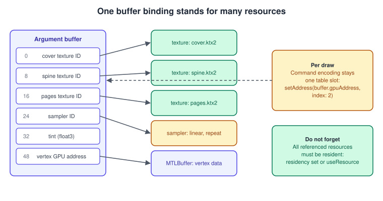
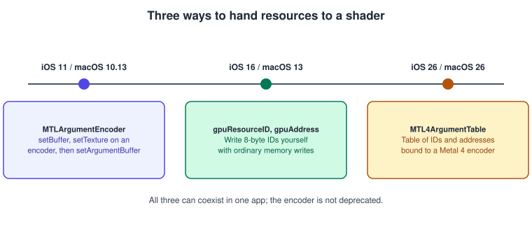
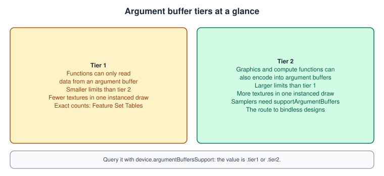
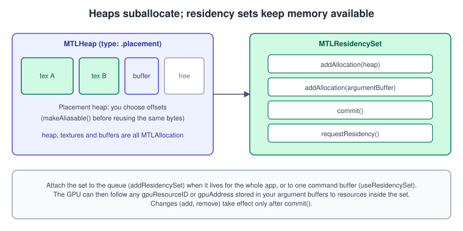
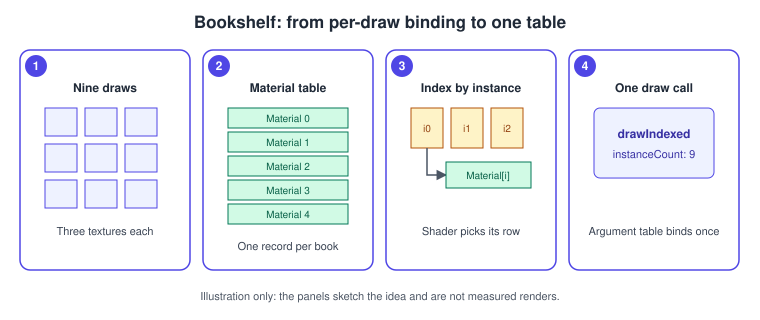

Argument Buffers and Bindless Resources
|
This content was generated with the assistance of AI and should be verified against the official documentation before being relied on in production. |
A shader that draws a textured book needs a texture and a sampler. A shader that draws a whole shelf of books, each with a cover,
a spine and a page texture, needs dozens. The classic way to give them to the GPU is to call setFragmentTexture and
setFragmentBuffer for every draw; the CPU repeats the work every frame and the shader can only see what was bound. Argument
buffers turn that around: they are ordinary Metal buffers whose contents are references to other resources. You bind one buffer,
and the shader reaches every texture, sampler and buffer stored inside it. Taken to its end, this is bindless rendering: the
shader picks resources by index at run time, and the CPU no longer decides which draw sees which texture.
The facts were checked in November 2026. The versions documented are Metal 4 (the MTL4* types, available from iOS, iPadOS,
macOS, tvOS and visionOS 26.0) next to the older MTL* types, and Metal Shading Language 4.0 and 4.1 (MTLLanguageVersion.version4_0
from the 26 OSes, version4_1 from the 27 OSes). Argument buffers themselves are older: MTLArgumentEncoder and
MTLArgumentBuffersTier date from iOS 11 and macOS 10.13, gpuResourceID from iOS 16 and macOS 13, and MTLResidencySet from iOS 18
and macOS 15. Metal 4 needs an A14 or later, an Apple-silicon Mac or an Apple Vision Pro. The code is Swift 6 with Xcode 27 on an
Apple-silicon Mac.
In the running example, Metal Bookshelf (a multiplatform SwiftUI app hosting an MTKView, with a Metal 4 path and a Metal 3
fallback, plus a visionOS target), this page is the step after instancing many books: each book instance reads its own textures from
a material table, so the whole shelf is one draw call. The next page,
GPU-Driven Rendering and Indirect Command Buffers, uses the same table to let the
GPU choose what to draw. The binding basics are in Buffers and Vertex Descriptors
and Textures and Samplers; the Metal 4 frame objects are in
Hello Triangle with Metal 4. For the same idea in other APIs see
OpenGL uniforms, UBOs and SSBOs.
The idea

An argument buffer is an MTLBuffer whose bytes follow the layout of a structure declared in Metal Shading Language. A texture inside
that structure takes eight bytes: an opaque 64-bit identifier that the GPU resolves to the texture. A sampler takes eight bytes.
A pointer to another buffer takes eight bytes: the buffer’s GPU address. Plain data such as a tint colour sits next to them, with
the normal alignment rules.
Three benefits follow:
-
Less CPU work. One
setAddressorsetFragmentBufferreplaces dozens of per-resource calls, and the contents can be built once and reused every frame. -
More resources. An argument buffer is not limited by the small number of texture and sampler slots a function has. Limits depend on the tier (below).
-
GPU-side control. On tier 2, a compute function can write the contents, so the GPU decides what each draw sees. This is the basis of GPU-driven rendering.
The cost is that you take over a job Metal used to do: telling the system which resources the GPU may touch. A resource referenced only through an argument buffer is invisible to the driver until you declare it resident (see below).
Three generations of binding

| Model | Available | How you fill the data | When to use |
|---|---|---|---|
|
iOS 11, macOS 10.13 |
Ask a function ( |
Existing code; it is not deprecated. |
|
iOS 16, macOS 13 |
Read |
The default for new code on the Metal 3 path. Simple, fast, shareable with C structs. |
|
iOS 26, macOS 26 and the other 26 OSes |
A small table object bound to a Metal 4 encoder: |
The Metal 4 path. Metal 4 encoders have no per-resource bind calls at all, so this is how you bind anything. |
Direct writes and the argument table both use the same two values. MTLResourceID is an opaque 8-byte identifier returned by the
gpuResourceID property of textures, samplers, indirect command buffers and other resources. MTLGPUAddress is a 64-bit number
returned by MTLBuffer.gpuAddress; shaders see it as a pointer. Neither value keeps the resource alive and neither makes it
resident: you hold the object, and you tell Metal that the GPU may use it.
A material table for the Bookshelf
One header shared by Swift and MSL guarantees that the two sides agree on the layout. The header is added to the target’s bridging header (see The Metal Shading Language for the shared-header pattern).
// ShaderTypes.h : included by the Metal compiler and imported into Swift through the bridging header.
#ifndef ShaderTypes_h
#define ShaderTypes_h
#include <simd/simd.h>
#ifdef __METAL_VERSION__
#include <metal_stdlib>
using namespace metal;
#define TEXTURE2D(name) texture2d<float> name
#define SAMPLER(name) sampler name
#else
#import <Metal/Metal.h>
#define TEXTURE2D(name) MTLResourceID name
#define SAMPLER(name) MTLResourceID name
#endif
// One row of the material table. 24 bytes of IDs, 8 for the sampler, then 16 for the tint.
struct BookMaterial {
TEXTURE2D(cover);
TEXTURE2D(spine);
TEXTURE2D(pages);
SAMPLER(smp);
vector_float3 tint;
};
// Per-instance data: the model matrix and which row of the table to read.
struct BookInstance {
matrix_float4x4 model;
uint32_t materialIndex;
};
#endifThe layout is four 8-byte identifiers (32 bytes), then a 16-byte aligned float3, so one BookMaterial is 48 bytes on both
sides (the MSL compiler and the C compiler agree on vector_float3 alignment). If a structure ever gains a field, keep the check
MemoryLayout<BookMaterial>.stride equal to what the shader expects: an off-by-eight mismatch shows up as textures that swap places.
The shader reaches the table through a pointer, so it can index any row:
#include <metal_stdlib>
#include "ShaderTypes.h"
using namespace metal;
struct VertexOut {
float4 position [[position]];
float2 uv;
uint material [[flat]];
};
struct Vertex { float3 position; float2 uv; };
vertex VertexOut bookVertex(uint vid [[vertex_id]],
uint iid [[instance_id]],
device const Vertex *vertices [[buffer(0)]],
device const BookInstance *books [[buffer(1)]],
constant float4x4 &viewProjection [[buffer(3)]])
{
BookInstance b = books[iid];
VertexOut out;
out.position = viewProjection * b.model * float4(vertices[vid].position, 1.0);
out.uv = vertices[vid].uv;
out.material = b.materialIndex;
return out;
}
fragment float4 bookFragment(VertexOut in [[stage_in]],
device const BookMaterial *materials [[buffer(2)]])
{
BookMaterial m = materials[in.material];
// Which of the three textures to use depends on the UV region: here a simple split.
float4 c = (in.uv.x < 0.15) ? m.spine.sample(m.smp, in.uv)
: (in.uv.x > 0.95) ? m.pages.sample(m.smp, in.uv)
: m.cover.sample(m.smp, in.uv);
return float4(c.rgb * m.tint, c.a);
}Notes on the shader:
-
materialcarries[[flat]]because an integer varying must not be interpolated. -
Textures in a structure are sampled through the structure:
m.cover.sample(m.smp, uv). The sampler inside the structure must have been created withsupportArgumentBuffers = true. -
device const BookMaterial *is a pointer to an unbounded array of rows. That is the tier 2 pattern: the number of rows is limited by the buffer size and by how many resources you make resident, not by slots. -
No
[[id(n)]]attribute appears. That attribute is needed only when the CPU fills the buffer through anMTLArgumentEncoder; direct writes and GPU-side writes do not use it.
Filling the table from Swift
import Metal
import simd
struct BookshelfMaterials {
let buffer: MTLBuffer
let textures: [MTLTexture] // keep strong references: IDs do not retain
let sampler: MTLSamplerState
init(device: MTLDevice, covers: [MTLTexture], spines: [MTLTexture], pages: [MTLTexture]) {
let sd = MTLSamplerDescriptor()
sd.minFilter = .linear
sd.magFilter = .linear
sd.mipFilter = .linear
sd.sAddressMode = .repeat
sd.tAddressMode = .repeat
sd.supportArgumentBuffers = true // required to store the sampler in a buffer
sd.label = "Book sampler"
sampler = device.makeSamplerState(descriptor: sd)!
let count = covers.count
buffer = device.makeBuffer(length: MemoryLayout<BookMaterial>.stride * count,
options: .storageModeShared)!
buffer.label = "Book material table"
let rows = buffer.contents().bindMemory(to: BookMaterial.self, capacity: count)
for i in 0..<count {
rows[i] = BookMaterial(cover: covers[i].gpuResourceID,
spine: spines[i].gpuResourceID,
pages: pages[i].gpuResourceID,
smp: sampler.gpuResourceID,
tint: SIMD3<Float>(1, 1, 1))
}
textures = covers + spines + pages
}
}Source: gpuResourceID
Things to check in this code:
-
On Apple silicon the buffer is in unified memory, so
.storageModeSharedwrites are visible to the GPU without a copy. On a discrete GPU, use a.privatebuffer and a blit, or.managedwithdidModifyRange;MTLStorageMode.managedis deprecated in the 27 OSes, so prefer shared or private. -
Textures must be created with the usage
.shaderRead. An ID from a texture lacking it validates as an error when sampled. -
The
texturesarray exists to keep the objects alive. If the last strong reference disappears, the ID dangles and the GPU reads freed memory.
Binding on the Metal 4 path
On Metal 4 a render encoder does not have setFragmentBuffer. You write addresses and IDs into an MTL4ArgumentTable, then bind the
table to one or more stages with setArgumentTable(_:stages:).
final class BookRenderer {
let device: MTLDevice
let queue: MTL4CommandQueue
let table: MTL4ArgumentTable
let residency: MTLResidencySet
let materials: BookshelfMaterials
let vertexBuffer: MTLBuffer
let instanceBuffer: MTLBuffer
let uniformBuffer: MTLBuffer
init(device: MTLDevice, materials: BookshelfMaterials,
vertexBuffer: MTLBuffer, instanceBuffer: MTLBuffer, uniformBuffer: MTLBuffer) throws {
self.device = device
self.materials = materials
self.vertexBuffer = vertexBuffer
self.instanceBuffer = instanceBuffer
self.uniformBuffer = uniformBuffer
queue = device.makeMTL4CommandQueue()!
let td = MTL4ArgumentTableDescriptor()
td.maxBufferBindCount = 4
td.label = "Book argument table"
table = try device.makeArgumentTable(descriptor: td)
// Everything the GPU might reach, directly or through the table.
let rd = MTLResidencySetDescriptor()
rd.label = "Bookshelf resources"
residency = try device.makeResidencySet(descriptor: rd)
residency.addAllocation(materials.buffer)
for t in materials.textures { residency.addAllocation(t) }
residency.addAllocation(vertexBuffer)
residency.addAllocation(instanceBuffer)
residency.addAllocation(uniformBuffer)
residency.commit() // finalize the pending additions
residency.requestResidency() // make them resident now, not at first commit
queue.addResidencySet(residency) // attach to the queue for the app's lifetime
}
func encode(into encoder: MTL4RenderCommandEncoder, indexCount: Int, indexBuffer: MTLBuffer, instanceCount: Int) {
table.setAddress(vertexBuffer.gpuAddress, index: 0)
table.setAddress(instanceBuffer.gpuAddress, index: 1)
table.setAddress(materials.buffer.gpuAddress, index: 2)
table.setAddress(uniformBuffer.gpuAddress, index: 3)
encoder.setArgumentTable(table, stages: [.vertex, .fragment])
encoder.drawIndexedPrimitives(primitiveType: .triangle,
indexCount: indexCount,
indexType: .uint16,
indexBuffer: indexBuffer.gpuAddress,
indexBufferLength: indexBuffer.length,
instanceCount: instanceCount)
}
}Source: MTL4ArgumentTable
The argument table’s methods, as documented, are setAddress(_:index:), setAddress(_:attributeStride:index:) (for vertex
attributes with a dynamic stride), setResource(_:bufferIndex:), setTexture(_:index:) and setSamplerState(_:index:). The
descriptor’s maxBufferBindCount, maxTextureBindCount and maxSamplerStateBindCount size the table; initializeBindings clears
it on creation; supportAttributeStrides must be set if you use the stride variant. Bind the indices the shader uses with
[[buffer(n)]], [[texture(n)]] and [[sampler(n)]].
A table is not a snapshot. Metal copies its bindings when you encode a draw, so changing the table after the draw does not affect that draw, but changing it while an earlier frame’s command buffer is still being encoded by another thread is a race. Give each thread (and each frame in flight, if you reuse command buffers) its own table.
Metal 3 fallback
The fallback uses the same buffers, bound the classic way, and declares residency per encoder:
func encodeMetal3(encoder: MTLRenderCommandEncoder, indexCount: Int, indexBuffer: MTLBuffer, instanceCount: Int) {
encoder.setVertexBuffer(vertexBuffer, offset: 0, index: 0)
encoder.setVertexBuffer(instanceBuffer, offset: 0, index: 1)
encoder.setFragmentBuffer(materials.buffer, offset: 0, index: 2)
encoder.setVertexBuffer(uniformBuffer, offset: 0, index: 3)
// Indirectly referenced resources are not tracked: tell Metal the fragment stage reads them.
encoder.useResources(materials.textures, usage: .read, stages: .fragment)
encoder.drawIndexedPrimitives(type: .triangle, indexCount: indexCount, indexType: .uint16,
indexBuffer: indexBuffer, indexBufferOffset: 0,
instanceCount: instanceCount)
}Source: useResource(:usage:stages:)
useResources (and useHeap) per encoder is the older way to declare residency; Apple’s documentation says that these calls add CPU
overhead per call and that Metal makes the resources resident only after the command buffer is committed. A residency set removes
both costs and works on the Metal 3 path as well, since MTLResidencySet is available from iOS 18 and macOS 15, so a common design uses
residency sets on both paths and keeps useResources only for devices older than that.
Argument buffer tiers

switch device.argumentBuffersSupport {
case .tier1:
// Read-only argument buffers; keep arrays small and bind a table per object or material.
print("tier 1")
case .tier2:
// Pointer to unbounded arrays, GPU-side encoding, large heaps of textures.
print("tier 2")
@unknown default:
print("unknown tier")
}Source: MTLArgumentBuffersTier
The documented difference that matters most: on tier 2, graphics and compute functions can encode data into an argument buffer (tier 1 functions can only read it), and tier 2 devices can reach more textures in an instanced draw call. The exact limits (number of buffers, textures and samplers per stage, argument buffer size) are in the Metal Feature Set Tables, and they change by GPU family, so read them rather than relying on remembered numbers. If you must support a tier 1 device, design the material table so a draw needs a small, fixed set of textures.
Heaps
An MTLHeap is a block of memory from which you suballocate buffers, textures and acceleration structures. Two reasons to use one with argument buffers: creating many resources from one heap is
cheap, and residency of the heap makes everything allocated from it resident at once (adding a heap to a residency set adds
all its resources).

MTLHeapType |
Meaning |
|---|---|
|
Metal chooses the offsets as you allocate. Simple; freed space is reused. |
|
You choose each resource’s offset. Lets resources with non-overlapping lifetimes share the same bytes (aliasing). |
|
Pages of the resource are mapped and unmapped on demand; used for streaming (see Resource Loading and Streaming). |
func makeTextureHeap(device: MTLDevice, descriptors: [MTLTextureDescriptor]) -> (MTLHeap, [MTLTexture])? {
// 1. Measure: size and alignment of each texture, packed one after another.
var offsets: [Int] = []
var total = 0
for d in descriptors {
d.storageMode = .private
let sa = device.heapTextureSizeAndAlign(descriptor: d)
total = (total + sa.align - 1) / sa.align * sa.align // round up to the alignment
offsets.append(total)
total += sa.size
}
// 2. Create a placement heap big enough for all of them.
let hd = MTLHeapDescriptor()
hd.type = .placement
hd.storageMode = .private
hd.hazardTrackingMode = .untracked
hd.size = total
guard let heap = device.makeHeap(descriptor: hd) else { return nil }
heap.label = "Book textures"
// 3. Place each texture at its offset.
var textures: [MTLTexture] = []
for (d, o) in zip(descriptors, offsets) {
guard let t = heap.makeTexture(descriptor: d, offset: o) else { return nil }
textures.append(t)
}
return (heap, textures)
}Rules and options:
-
hazardTrackingModeis a heap configuration. With.untracked, Metal does not insert dependencies between passes that use resources of the heap; you must synchronise with fences, events or Metal 4 barriers (see Synchronization and Barriers). Set it explicitly instead of relying on the default. -
resource.makeAliasable()marks a resource so that its memory can be reused by another resource placed at the same offset. -
heap.maxAvailableSize(alignment:),usedSize,currentAllocatedSizeandsizetell you how full the heap is. -
device.heapBufferSizeAndAlign(length:options:)andheapTextureSizeAndAlign(descriptor:)returnMTLSizeAndAlign; always use the alignment, since texture alignment is larger than that of a buffer.
Residency sets
Anything the GPU can reach through an argument buffer or a table must be resident. Metal cannot discover it, because it does not parse your buffers.
The documented behaviour:
-
You create a set from an
MTLResidencySetDescriptor(label,initialCapacity) withdevice.makeResidencySet(descriptor:). -
addAllocation(_:)andaddAllocations(_:)accept anyMTLAllocation: buffers, textures and heaps. Adding a heap adds every resource allocated from it. Adding the same allocation twice is ignored. -
Changes are pending until
commit(). -
requestResidency()asks Metal to make the contents resident ahead of time. Without it, Metal does this work when the first command buffer that uses the set is committed, which can delay the start of the GPU work. Call it at launch or during a loading screen. -
endResidency()tells Metal the allocations may be made nonresident;removeAllocation(_:),removeAllocations(_:)andremoveAllAllocations()change the contents (followed bycommit()). -
Attach a set to a queue with
addResidencySet(_:)oraddResidencySets(_:)(onMTLCommandQueueandMTL4CommandQueue) or to a command buffer withuseResidencySet(_:)oruseResidencySets(_:)on anMTL4CommandBuffer. A queue or a command buffer can hold up to 32 sets. Queue attachment is best for resources used all the time. -
containsAllocation(_:),allocationCount,allocatedSizeandallAllocationslet you inspect a set. -
CAMetalLayerhas its ownresidencySet(26.0) for the drawables it vends; with Metal 4 add it to the queue as well.
Because a set can be updated while the app runs, a streaming system keeps one "always resident" set (shared textures, the material table, the geometry) and a second, small set for resources that come and go.
Bindless: choosing the texture in the shader
"Bindless" means the shader picks a resource by an integer instead of the CPU binding it. The Bookshelf table above is already
bindless for materials: materials[in.material] chooses among all rows. Two practical extensions:
-
Global texture table. One buffer of
MTLResourceIDvalues holds every texture of the scene; each material row stores indices. New textures are appended without changing a single draw call. -
Compute fills the table. A tier 2 compute kernel writes rows (for instance, to select a level of detail or a texture-streaming result), and a later render pass reads them. This is the technique of Apple’s sample "Encoding argument buffers on the GPU".
// A compute kernel that picks a texture row per instance on the GPU (tier 2).
kernel void assignMaterials(device BookInstance *books [[buffer(1)]],
device const float *dust [[buffer(4)]], // per-book dust amount 0..1
constant uint &dustyFirstRow [[buffer(5)]],
uint gid [[thread_position_in_grid]])
{
// Dusty books use rows from dustyFirstRow onward; clean books keep their own row.
if (dust[gid] > 0.5) {
books[gid].materialIndex = dustyFirstRow + (gid % 3);
}
}Divergence matters: if neighbouring pixels read different rows, the hardware samples different textures in the same SIMD group and may run slower than with uniform indices. Sort or batch so that the index is uniform where you can.
Legacy: MTLArgumentEncoder
Existing projects, and tier 1 devices, use an encoder. The shader marks each member with [[id(n)]]:
struct LegacyMaterial {
texture2d<float> cover [[id(0)]];
texture2d<float> spine [[id(1)]];
sampler smp [[id(2)]];
float3 tint [[id(3)]];
};
fragment float4 legacyFragment(VertexOut in [[stage_in]],
constant LegacyMaterial &m [[buffer(2)]])
{
return m.cover.sample(m.smp, in.uv) * float4(m.tint, 1.0);
}let fragmentFunction = library.makeFunction(name: "legacyFragment")!
let encoder = fragmentFunction.makeArgumentEncoder(bufferIndex: 2)
let argumentBuffer = device.makeBuffer(length: encoder.encodedLength, options: .storageModeShared)!
encoder.setArgumentBuffer(argumentBuffer, offset: 0)
encoder.setTexture(coverTexture, index: 0)
encoder.setTexture(spineTexture, index: 1)
encoder.setSamplerState(sampler, index: 2)
encoder.constantData(at: 3).storeBytes(of: SIMD3<Float>(1, 1, 1), as: SIMD3<Float>.self)Source: MTLArgumentEncoder
For arrays, setArgumentBuffer(_:startOffset:arrayElement:) places the encoder at element i of a buffer holding n copies, and
alignment and encodedLength give the stride. Nested argument buffers use makeArgumentEncoderForBuffer(atIndex:). Nothing in
MTLArgumentEncoder is deprecated, but new code gains nothing from it unless a tier 1 device is a target.

Common mistakes
-
Resources not resident. A texture stored in an argument buffer but missing from every residency set,
useResourcecall and heap gives a black result or a GPU page fault on Apple silicon. Add everything you reference. -
Sampler without
supportArgumentBuffers. The sampler ID is invalid in the buffer. -
Struct layout drift. Different alignment or an extra member on one side. Use the shared header and compare
MemoryLayout.stride. -
Forgetting retention.
gpuResourceIDandgpuAddressdo not retain. Release the texture while a frame still uses it and the GPU reads freed memory. -
Writing a table in use. Mutating a table or buffer that earlier GPU work still reads, without a fence, event or distinct buffer per frame in flight.
-
MTLStorageMode.managedon new code. Deprecated in the 27 OSes; use shared or private. -
Heap without synchronisation. An
.untrackedheap needs explicit dependencies between passes that alias or reuse memory.
Performance notes
-
Build the table once and mutate only rows that change. Per-frame rebuilds of thousands of rows cost CPU time and cache.
-
A residency set attached to the queue is cheaper than attaching the same set to every command buffer, and cheaper than per-encoder
useResourcecalls; commit it ahead of time withrequestResidency. -
Keep the resident set small: every resident allocation occupies memory. Use
removeAllocationandendResidencyfor assets that are not near. -
Avoid very divergent texture indices inside one SIMD group.
-
For large scenes on tier 2 devices, a single draw per material class plus a GPU-written table usually beats thousands of tiny draws; the next page pushes this to indirect command buffers.
What changed recently
| Version | Change |
|---|---|
iOS 11, macOS 10.13 (2017) |
|
iOS 16, macOS 13 (2022) |
|
iOS 18, macOS 15 (2024) |
|
26 OSes (2025) |
Metal 4: |
27 OSes (2026) |
|
Where the books are outdated
| Book | Statement | Today |
|---|---|---|
Metal by Tutorials, 4th edition (chapter 25, heaps and argument buffers) |
Argument buffers are filled through |
You may write |
Metal Programming Guide (2017, chapter 6, buffers and heaps) |
Written for Metal 2, Swift 4 and Xcode 9, with |
|
Neither book covers the Metal 4 argument table or residency sets, and the 2017 text predates gpuResourceID.
References
-
Improving CPU performance by using argument buffers: https://developer.apple.com/documentation/metal/improving-cpu-performance-by-using-argument-buffers
-
Using argument buffers with resource heaps: https://developer.apple.com/documentation/metal/using-argument-buffers-with-resource-heaps
-
Encoding argument buffers on the GPU: https://developer.apple.com/documentation/metal/encoding-argument-buffers-on-the-gpu
-
Managing groups of resources with argument buffers: https://developer.apple.com/documentation/metal/managing-groups-of-resources-with-argument-buffers
-
Simplifying GPU resource management with residency sets: https://developer.apple.com/documentation/metal/simplifying-gpu-resource-management-with-residency-sets
-
MTL4ArgumentTable: https://developer.apple.com/documentation/metal/mtl4argumenttable
-
MTL4ArgumentTableDescriptor: https://developer.apple.com/documentation/metal/mtl4argumenttabledescriptor
-
MTLResidencySet: https://developer.apple.com/documentation/metal/mtlresidencyset
-
MTLHeap: https://developer.apple.com/documentation/metal/mtlheap
-
MTLArgumentBuffersTier: https://developer.apple.com/documentation/metal/mtlargumentbufferstier
-
MTLArgumentEncoder: https://developer.apple.com/documentation/metal/mtlargumentencoder
-
gpuResourceID: https://developer.apple.com/documentation/metal/mtltexture/gpuresourceid
-
gpuAddress: https://developer.apple.com/documentation/metal/mtlbuffer/gpuaddress
-
Understanding the Metal 4 core API: https://developer.apple.com/documentation/metal/understanding-the-metal-4-core-api
-
Metal Shading Language specification: https://developer.apple.com/metal/Metal-Shading-Language-Specification.pdf
-
Metal Feature Set Tables: https://developer.apple.com/metal/Metal-Feature-Set-Tables.pdf
-
Metal by Tutorials (Kodeco): https://www.kodeco.com/books/metal-by-tutorials
-
Metal Programming Guide (InformIT): https://www.informit.com/store/metal-programming-guide-tutorial-and-reference-via-9780134668949